Домик у тропы — кадры из сборки
В домике
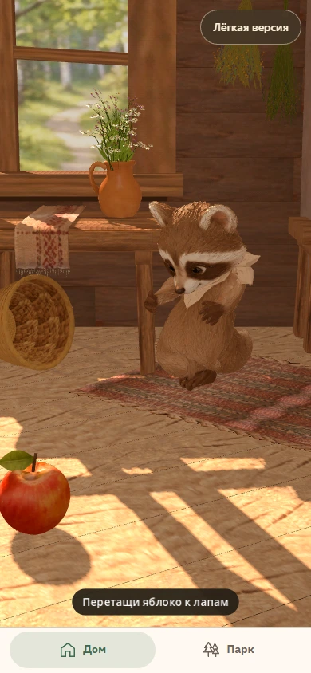
Знакомство Яблоко лежит на полу перед лапами.
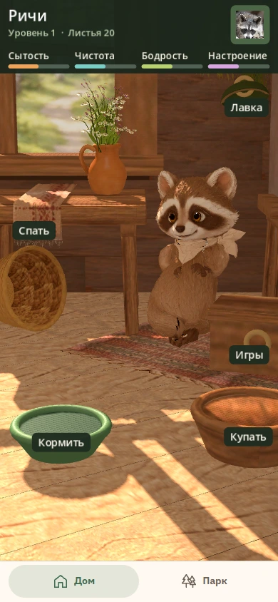
Дом после имени Четыре потребности и предметы комнаты.
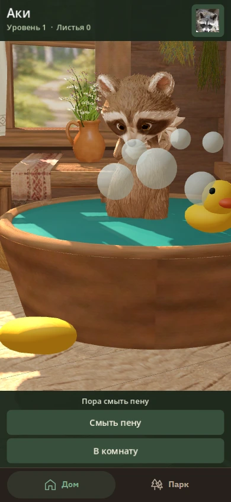
Купание Кадр из 3D-сцены во время мытья.
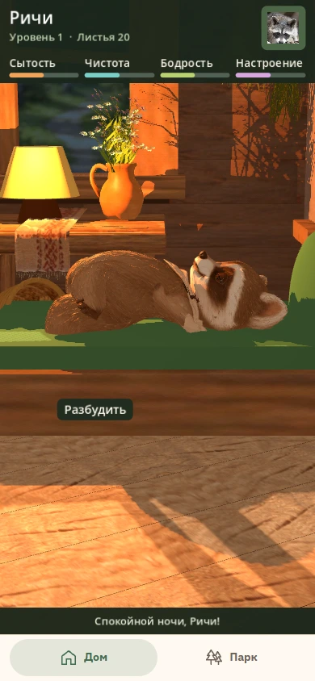
Сон Состояние после выключения света.
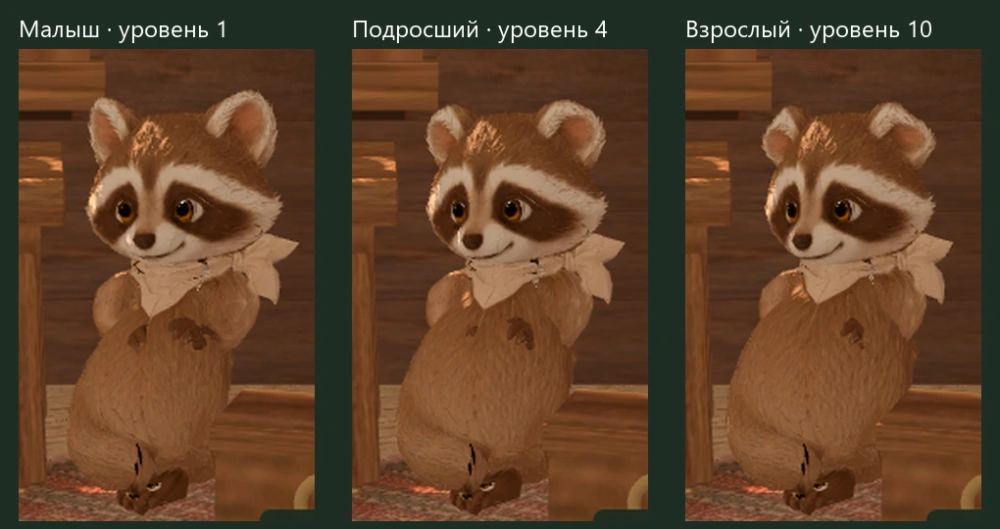
Три возраста Одинаковая камера в Godot, уровни 1, 4 и 10.
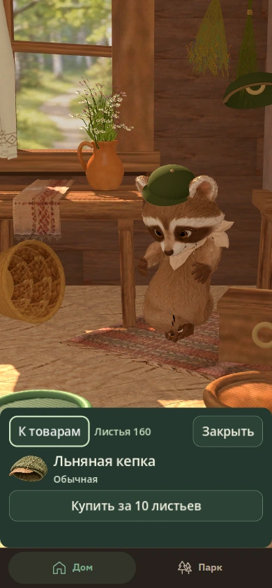
Примерка кепки Головной убор на модели до подтверждения покупки.
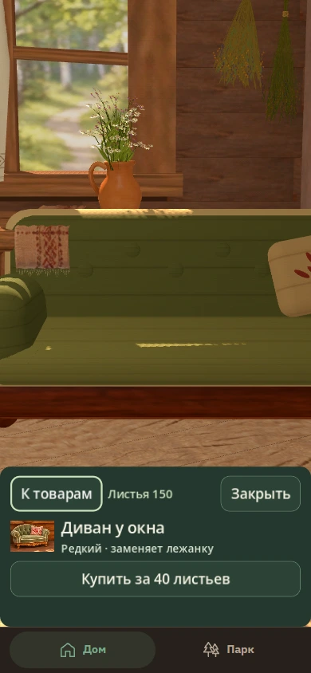
Новый диван Предпросмотр замены лежанки в доме.
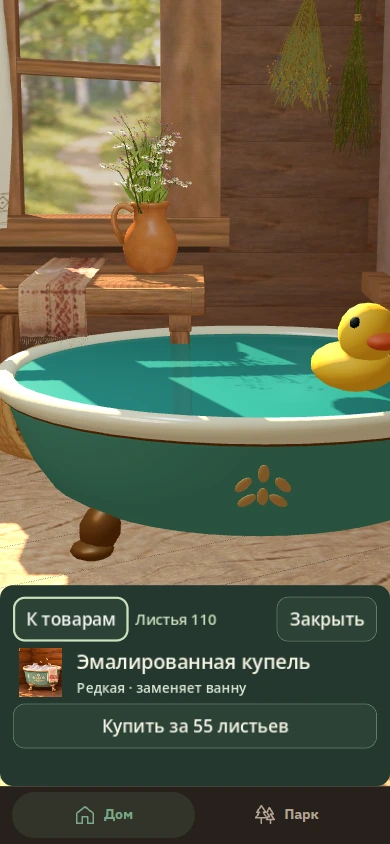
Новая купель Предпросмотр мебели в комнате.
В сундуке
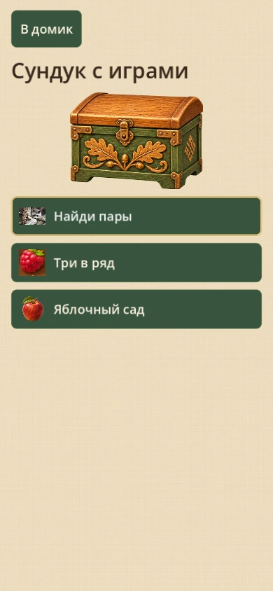
Выбор игры
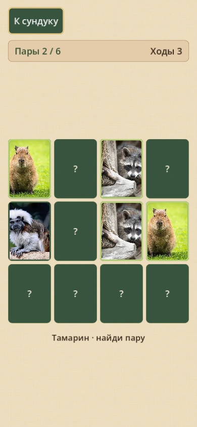
Найди пару Закрытые карточки обитателей парка.
 Три в ряд Цель партии, ходы и поле.
Три в ряд Цель партии, ходы и поле.
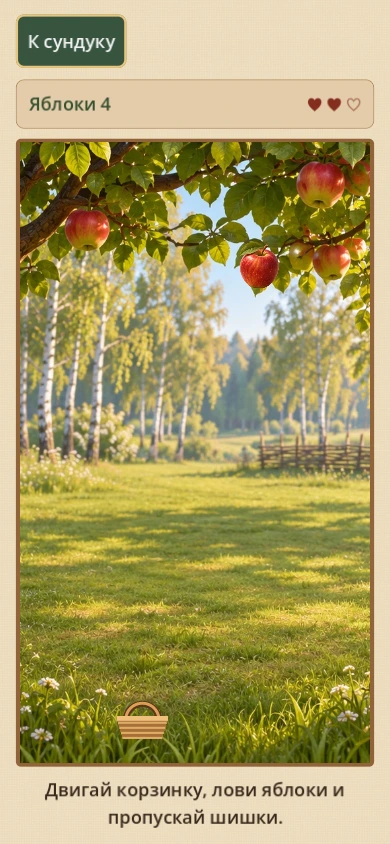
Лови яблоки Корзинка, падающие предметы и жизни.
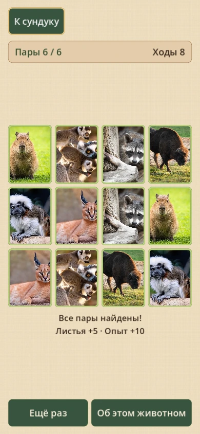
Итог партии Из результата можно перейти к обитателю парка.
В парке
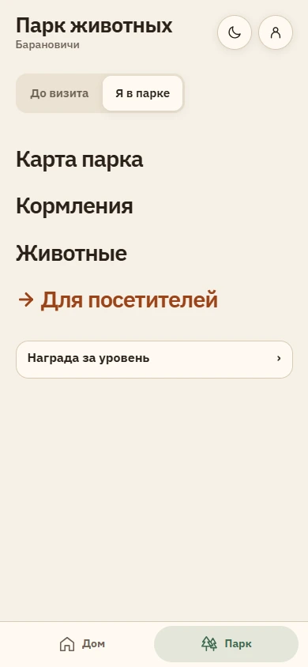
Меню парка
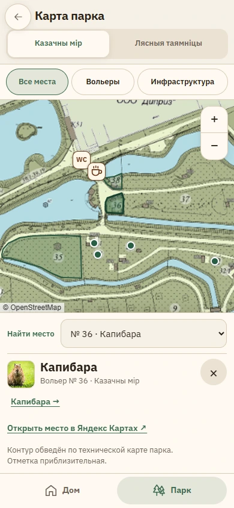
Капибара Касание внутри обведённого вольера.
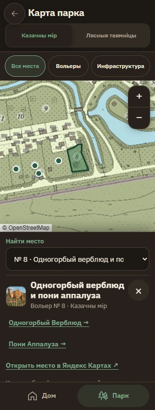
Два вида в одном вольере Тёмная тема на узком экране.
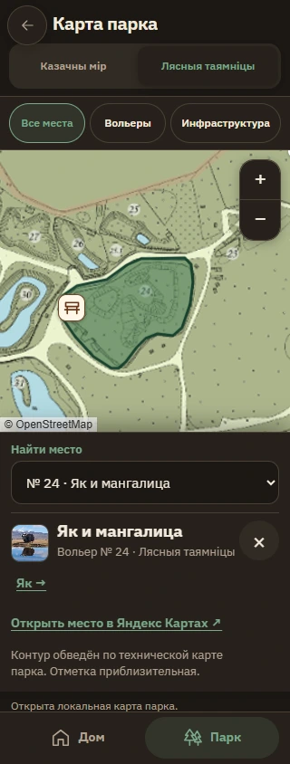
Вторая зона Выбор участка в «Лясных таямніцах».
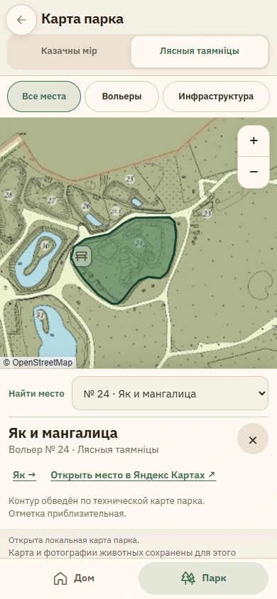
Возврат в путеводитель Работа локальной карты при отключённых внешних тайлах.
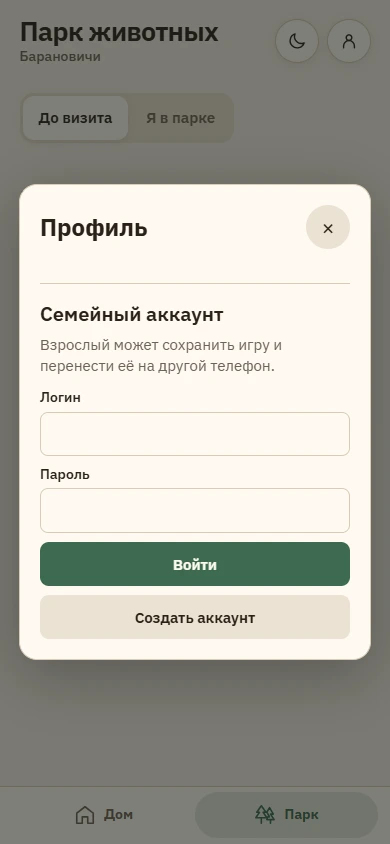
Семейный профиль Вход и создание аккаунта на локальном сервере.
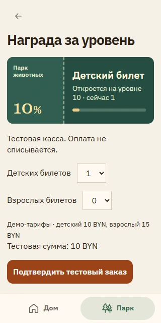
Пригласительный Демонстрация награды на экране 320 px.
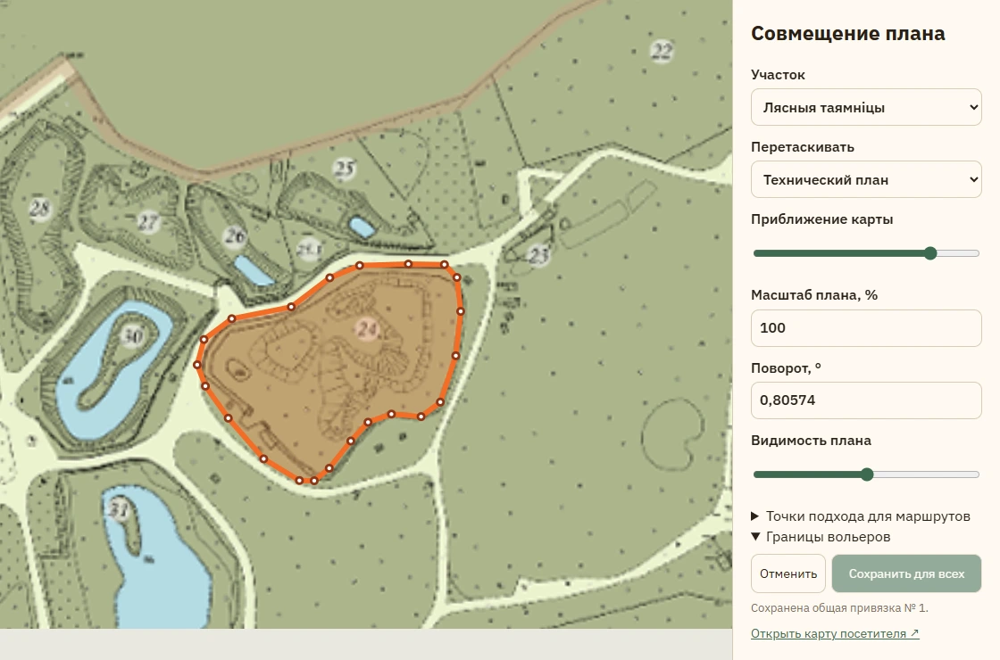
Служебный редактор Ручная проверка обводки по техническому плану.